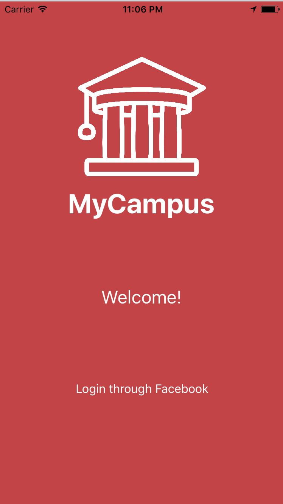
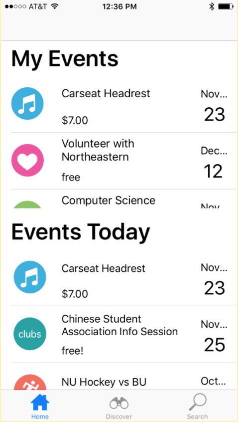
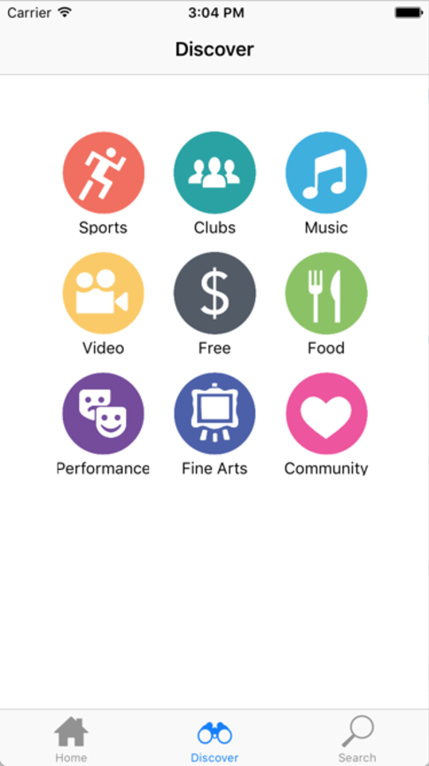
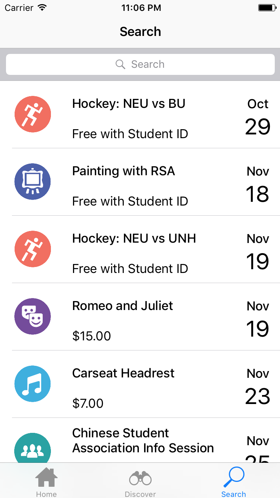
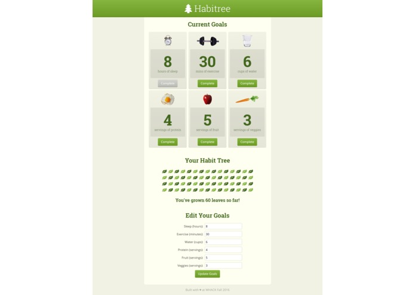
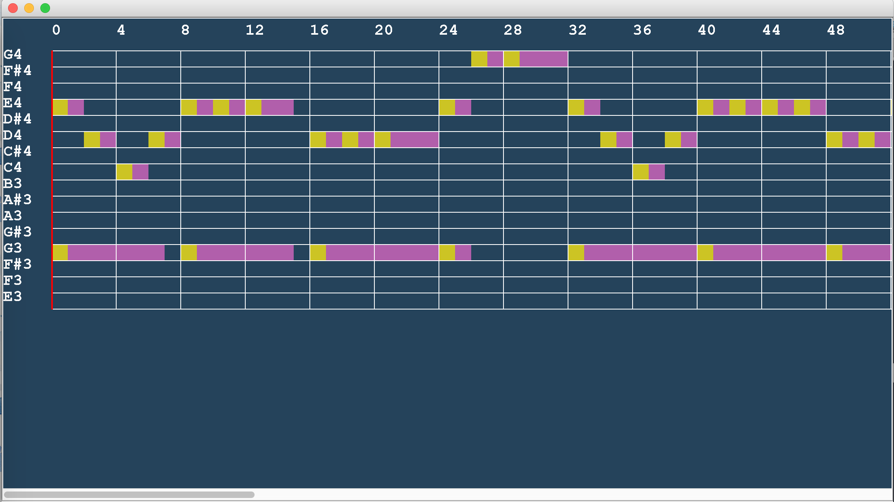

Hi, I'm Bahar! I'm passionate for designing solutions for problems in order to create software. I am completing my second year at Northeastern University. I love Computer Science because it makes me want to pull my hair out, jump for joy, and cry tears of sleep deprivation....all at once.
Fun fact: I won the creative writing senior award in high school and love to write poetry.
Check out some of my projects below!
MyCampus




What is it? MyCampus is an iOS app for Northeastern students to view and RSVP to campus events. Going to a large school like Northeastern, me and 3 other classmates decided that we wanted to help out freshmen, sophomores, and transfer students who feel like they often miss out on campus-events. Before even touching code, we spent a few months sketching, researching, prototyping, and testing. We engaged in UX design via personas and scenarios. We ended up developing the front end of this design that we came up with.
How is it made? I was a front-end developer for this project created the data models in Swift that were used throughout the interface. I created delegates for UITableView classes and added custon code for search functionality, categorizing events, and displaying RSVP'd events on the home screen.
HabitTree

What is it? HabitTree is a healthy habit website created for college students. Me and 3 other developers created it at the Fall 2016 WHACK (Wellesley College's Hackathon). College students need HabitTree because with the stress of academics and living on their own for the first time, health often becomes secondary. They create an account and can set their own goals--the name and duration of it--and HabitTree adds a leaf for every day they accomplish the goal.
How is it made? Their account and health data gets stored in a database that I worked on designing and creating in PostGreSQL. The website is built on the Flask framework. I was one of two backend developers on the project. I worked on creating a library in Python to query the health data. After we were done buildilng backend, I worked with the front-end developers to make sure the front and back end were connected seamlessly; this was done by implementing get and post functionality. Even though it was my first time ever working in Python, learning the Flask framework, and working with databases, I learned a lot and am very proud of the work we did.
Music Editor

What is it? This project is a music editor that plays music by parsing a file of notes. Its functionality includes the ability to add notes to a piece, remove notes from the piece, select pieces to implement repeats, and to pause the music.
How is it made? The editor was built using the Model-View-Controller design pattern. Me and 1 other programmer developed the front and back end using Java--with Swing being the library used to create the GUI. It was also great practice to work with the data structures needed for the model: hashmaps.